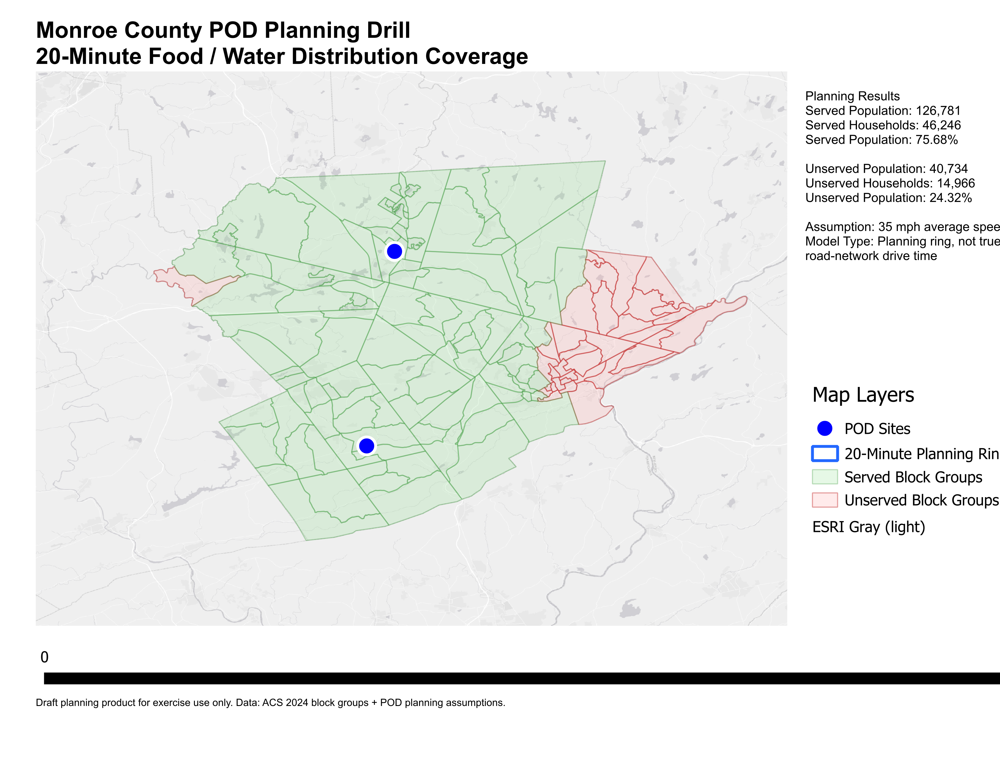

This prototype GIS planning product evaluates emergency food and water Point of Distribution (POD) coverage in Monroe County, Pennsylvania. The analysis uses Census block group demographics and two candidate POD locations to estimate population coverage and identify areas that may need additional distribution support.
Open Interactive Web Map Download PDF Map View Static Map ImageFollowing a disaster, counties may establish Points of Distribution to provide food, water, and emergency commodities to the public. This drill tests how GIS can support POD planning by estimating which populations are located within a reasonable planning distance of proposed POD sites.
The current analysis is based on two candidate POD locations:

This is a planning and exercise product only. It is not an official operational deployment map. The current model uses a planning-distance assumption and should be refined with road-network drive-time analysis, local emergency management input, site access review, traffic flow planning, and commodity throughput estimates before operational use.
{kind=link}